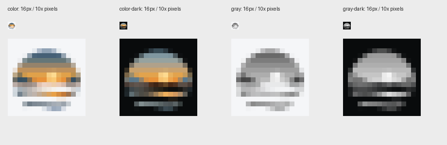
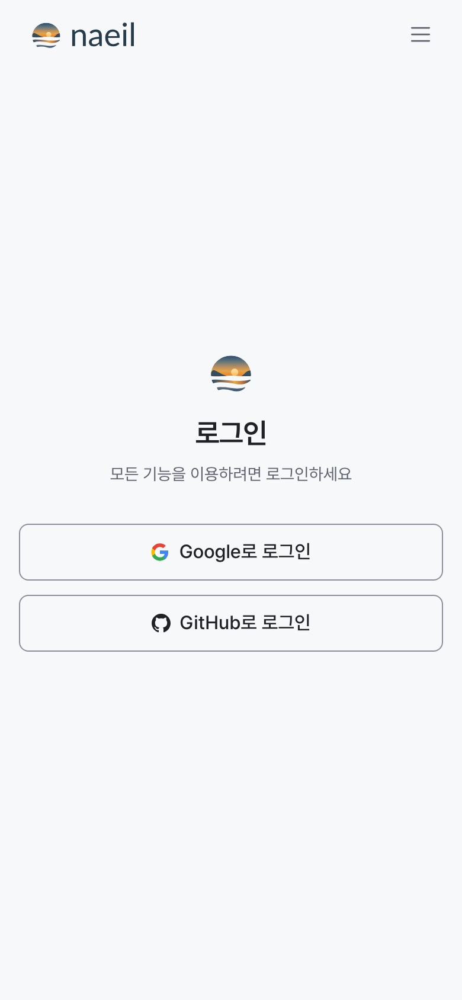
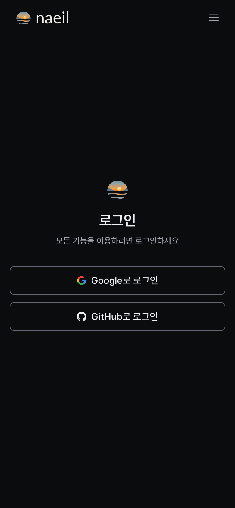

2026-10-11 · 웹·디지털 재사용용 파일 검수
Lato Regular 400·기본 글자 간격으로 최종 파일을 통일했다. 다른 프로젝트가 폰트나 UI 라이브러리를 설치하지 않고 쓸 수 있도록 독립 SVG·PNG·파비콘·가이드를 묶었다. 아래 통과 범위에서 파일 사용을 권장한다. 제품 소스·공유 패키지·운영 배포는 변경하지 않았다.
1.0.0의 ICO 안에 RGB PNG가 들어 있어 Next.js 16.1.7이 거부했다. 1.0.1에서는 세 프레임을 RGBA로 인코딩한다. 디코딩된 픽셀과 모든 SVG는 1.0.0과 동일하다. 아래 조형·브라우저 검수는 동일한 원본에 대한 1.0.0 결과를 승계하며, 패치의 ICO 프레임 검사·무결성 검사는 별도 기록한다.
| 항목 | 결과 |
|---|---|
| 완성 SVG | 로고 24개 + 파비콘/앱 아이콘 원본 4개. 외부 이미지·폰트·스크립트 의존성 없음. ID 중복·잘못된 그라데이션 참조 없음. |
| PNG | 투명 로고 PNG 84개. 실제 알파 픽셀을 검사하여 잘림과 빈 이미지 없음. 대표 심볼·세로 로고 최대 4096px. |
| 그레이스케일 | 선택한 회색 A 유지. 심볼·워드마크의 회색 RGB 채널이 동일함을 확인. 밝은 배경과 어두운 배경에서 섬의 명도 구분을 시각적으로 확인. |
| 작은 크기 | 16/20/24/28/32/40/48/64px 및 세로 로고 최소 폭 160px를 렌더하고 확인. 16px는 최근접 확대도 확인. 해·물결의 구분은 남고, 섬은 작은 실루엣으로 단순해진다. 16–48px는 small 파일을 사용한다. |
| 파비콘 | SVG의 밝음·어두움 자동 전환을 Chromium/WebKit에서 확인. ICO 16/32/48px 각 프레임을 디코딩하여 전용 PNG와 픽셀 일치 확인. ICO에는 양쪽 도구막대에서 보이는 따뜻한 단색 배경 적용. |
| 앱 아이콘 | 180/192/512px 파일 제공. maskable 아이콘의 전경 최대 반경 161.69px가 512px 캔버스의 안전 반경 204.8px 이내임을 확인. 실제 iOS/Android 설치 검증을 뜻하지 않는다. |
| 글자 대비 | 검증한 밝음·어두움 배경에서 워드마크 대비 10.61:1–17.33:1. 이는 단색 글자 색과 배경의 계산값이며 장식적 심볼의 모든 그라데이션 구간에 대한 접근성 적합 판정은 아니다. |
| 폰트 | 고정된 Google Fonts 커밋의 Lato 원본·OFL 해시 대조 완료. 글자는 SVG 경로로 배포. 원본 폰트와 라이선스는 재생성을 위해 함께 보존. |
헤더는 심볼 28px / 간격 8px / 소문자 몸통 14px. 양끝 잘림 방지용 1px 여백을 포함해 전체 90.11×28px. 푸터는 심볼 20px / 간격 6px / 몸통 10px, 전체 65.22×20px다. 앞선 검증과 글자 간격은 같고, 좌우에 투명 여백만 추가했다.
| 엔진 | 버전 | 독립 재사용 예제 | 실제 사이트 조건 | 결과 |
|---|---|---|---|---|
| chromium | 153.0.8010.12 | 4 | 8 | 통과 |
| webkit | 26.6 | 4 | 4 | 통과 |
| Firefox | 155 / Playwright 1543 | 미실행 | 미실행 | 브라우저 시작 실패 |
독립 예제는 새 임시 폴더에 패키지를 복사하여 별도 HTTP 서버에서 로드했다. 390px·DPR 2와 1440px·DPR 1, 밝음·어두움으로 8조건을 확인했다. 외부 네트워크 요청, 깨진 이미지, 가로 넘침이 없었고, 헤더 28px·로그인 심볼 40px·푸터 20px가 유지됐다. 앱 테마 전환도 확인했다.
실제 사이트는 https://naeil.dev 의 홈페이지와 로그인 페이지를 새 브라우저 컨텍스트에서 열고 로고만 임시 DOM 교체했다. 한국어는 양쪽 엔진의 모바일·데스크톱·양쪽 테마를 확인했고, 영어·일본어는 Chromium 모바일·양쪽 테마를 추가 확인했다. 총 12조건에서 헤더 메뉴 이동·로고 겹침·가로 넘침이 없었다. 모바일 메뉴 열림 상태에서도 로고 위치가 유지됐다. 로그인 심볼은 40×40px로 표시됐다. 서버에 저장하거나 운영 사이트를 교체한 결과는 아니다.
Firefox는 기본 임시 경로, /tmp 경로, 사용자 홈의 새 영구 프로필 모두 “Could not find profile folder”로 시작에 실패했다. 파일 렌더 실패와 구분하며, 검증한 브라우저 목록에 포함하지 않는다. WebKit 자동화 결과는 실제 Safari 앱·iPhone 실기기 전체 검증과 동일하지 않다.
원본 SVG 크기별 증거판 · Chromium 렌더 · WebKit 렌더



일본어 모바일 메뉴 · 데스크톱 헤더 · 모바일 푸터 · 독립 소비자 예제
이 버전은 웹·디지털용 재사용 패키지로 정리한 최종본이다. 본문 UI 글꼴이나 @naeil/ui의 API를 변경하지 않았다. 실제 서비스마다 위 가이드의 파일을 가져다 적용하면 된다. 이전 탐색 폴더와 selected-lato ZIP은 과거 비교본이며 새 프로젝트에는 이 1.0.1 패키지를 사용한다.
회색 A는 연속 명도를 쓰므로 엄격한 1도 도장·각인용 파일은 아니다. 인쇄소 CMYK 교정, 사진 배경 위 모든 조합, 상표 유사성 조사, 실제 앱스토어 제출은 완료 범위에 포함하지 않는다.
파일·픽셀·폰트 감사 · 브라우저 원시 결과와 Firefox 오류 · ZIP 추출·무결성·링크 검사 · 치수·조판 명세 · 사용 가이드
도구: logo-icon-design 지침, HarfBuzz, fontTools, librsvg, Pillow(픽셀 검사·ICO 디코딩·증거 확대), Playwright Chromium/WebKit. Firefox 설치 및 실행 시도. 이 단계에서는 새 research-router 검색이나 이미지 생성 서비스를 실행하지 않았다.